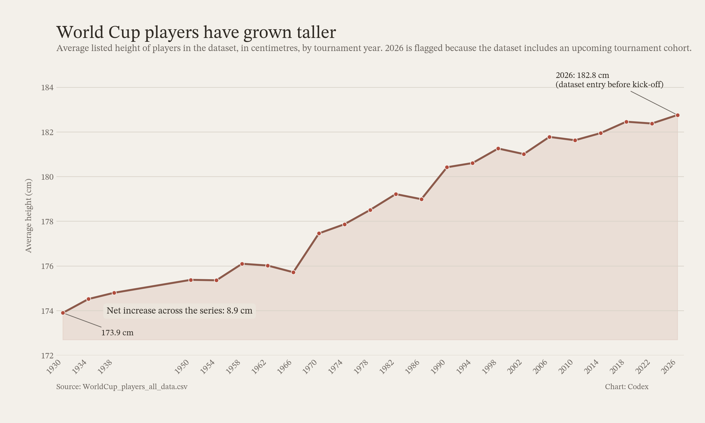

World Cup players have grown taller
Average listed height of players in the dataset has risen steadily from the early tournaments to the modern era, with the series climbing by 8.9 cm between 1930 and 2026.

173.9 cm1930 average
182.8 cm2026 average
6,419player rows with height data
Note: The 2026 row is included in the source file, but its tournament start date is June 11, 2026, so it should be treated as a dataset cohort rather than completed tournament history.